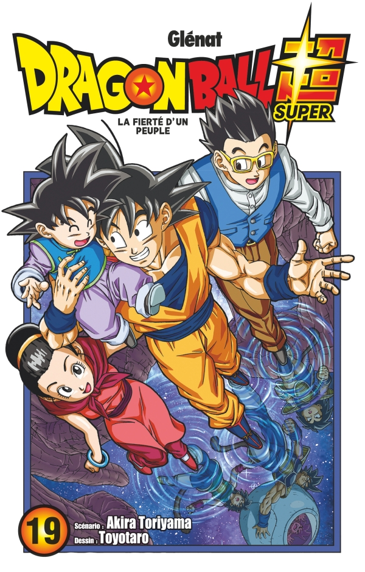

Grâce à ses féroces attaques, Granola avait pris le dessus sur Gas, mais celui-ci libère son instinct et déploie une puissance gigantesque. Goku et Vegeta ont bien du mal à lui tenir tête. Et si la clef pour vaincre Gas se trouvait dans les souvenirs de bardack, le defunt père de Goku ?!
Ch. 81 : Le conflit de Goku
Ch. 82 : Bardock vs Gas
Ch. 83 : Bardock vs Gas 2
Ch. 84 : La fierté du peuple guerrier